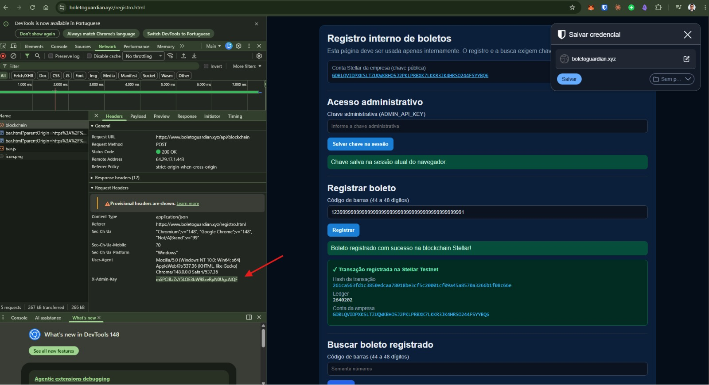

1. Hallazgo crítico
Vulnerabilidad
Exposición de ADMIN_API_KEY (credencial administrativa secreta de la API) en el navegador, en la página interna registro.html.
Cómo se detectó
Revisión de seguridad con DevTools de Chrome en el flujo de registro interno:
- Application → Session Storage: clave guardada tras "Guardar clave en la sesión".
- Network → POST /api/blockchain: cabecera
x-admin-keycon el secreto en texto claro.

x-admin-key visible en DevTools. La cuenta Stellar G… en pantalla es dato público; el hallazgo crítico es la clave administrativa secreta.Riesgo
| Aspecto | Impacto |
|---|---|
| Confidencialidad | Copia de la clave admin y llamadas a endpoints privilegiados |
| Integridad | Registro indebido de boletos on-chain |
| Severidad | Crítica |